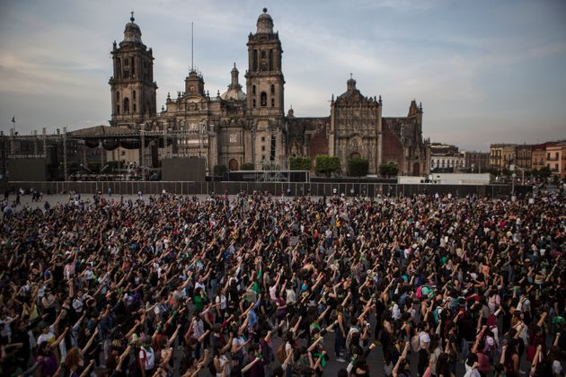
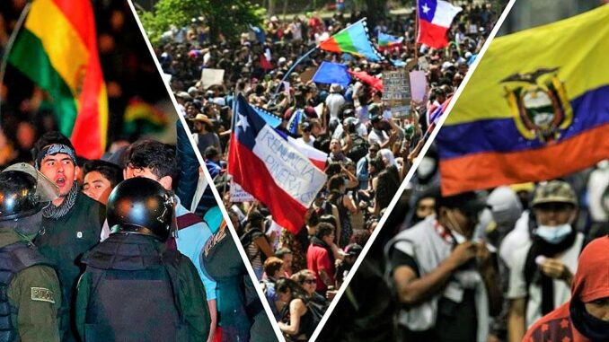
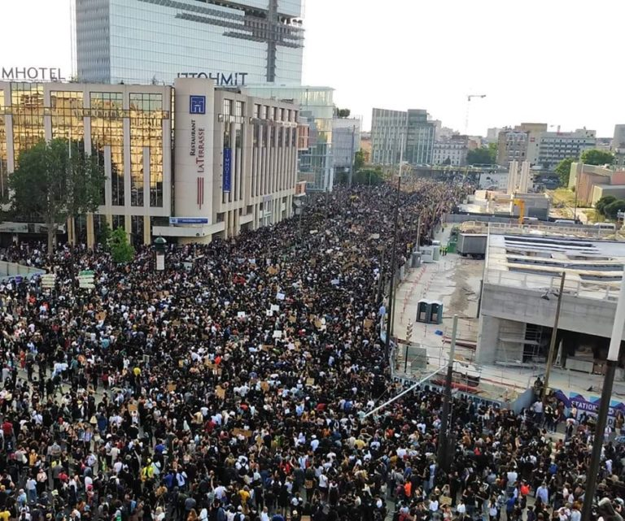

Movimientos sociales
Esta época es considerada por muchos como la era de los fenómenos o movimientos sociales, estos movimientos, unos ya existentes que se han fortalecido y otros que surgen dadas circunstancias actuales están dando un giro significativo a nuestros tiempos, pues cambian no solo la manera en que percibimos y analizamos las cosas, sino también nuestra manera de actuar. Todos estos fenómenos que se están dando en nuestra época son y serán estudiados por expertos historiadores y sociólogos como lo fueron otros en su momento, con el fin de probar o refutar los fundamentos de cada uno de ellos, existen un sinnúmero de movimientos sociales, el feminismo, el movimiento por el cambio climático, el veganismo, etc. Estos movimientos son considerados por muchos como “rebeldes” porque estos luchan por romper con una norma establecida que consideran injusta.
¿Qué es un movimiento social?
Un movimiento social está constituido por grupos de personas cuyo vínculo común es la lucha por un mismo fin, para establecer su posición en tanto se opone en contra de algo, ya sea esto una idea, un régimen, etc. Estos movimientos surgen a partir de reclamos, frustración y preocupación ante injusticias cometidas. Son actores colectivos que pretenden un cambio social, buscando formas de acción para expresarlas.
Características de los movimientos sociales
Capacidad de movilización
Continuidad de acción colectiva
Integración simbólica
Objetivos comunes
Identidad común a partir de una misma creencia o interés
Estabilidad organizativa
Estructuras horizontales
Tipos de movimientos sociales
Movimientos sociales culturales: hacen referencias a hechos religiosos, ecológicos o de minorías étnicas.
Movimientos sociales históricos: son aquellos en los que el pueblo apela contra decisiones del estado y su modo de desarrollo.
Movimientos sociales societales: aquellos que están en contra de una gestión social de una apuesta cultural que se reduce a los intereses de unos pocos.
Anti movimientos sociales: aquí encontramos aquellos grupos dedicados a las sectas, estos que se oponen a los cambios sociales que demandan otros movimientos sociales.
Reseña 
LATAM
La acción colectiva de los movimientos sociales en América Latina se ha hecho sentir, han adquirido gran protagonismo por lograr rupturas institucionales, mediante su capacidad de movilización mediante protestas, se observa que en su mayoría, estos buscan mayor democracia para sus regiones y esto ha provocado un fortalecimiento de la identidad ciudadana. En América Latina particularmente estos han tomado fuerza en las últimas décadas, desde el siglo 20 y estos inicios del siglo 21, se observan entre quienes se unen a dichos movimientos además del sentido de identidad grupal, grandes muestras de solidaridad entre sí, y bien dice el dicho que “La unión hace la fuerza” y es por eso que la acción colectiva ha llegado a tener resultados permanentes que coinciden con las demandas de dichos movimientos. Podemos decir que en América Latina, el siglo ha iniciado con reivindicaciones políticas en la calle, que no han sido en vano pues se han logrado establecer cambios tanto en las políticas, como en los gobiernos de turno; según estudiosos de temas políticos, estos movimientos han logrado la creación de una nueva identidad ciudadana en tanto crean escenarios públicos que invitan al cuestionamiento de lo establecido. A pesar de que los movimientos sociales se asocian a palabras como rebeldía, lucha, resistencia, insurrección, protesta y suelen tener muchos “antis” en su discurso (anticapitalismo, antiestado, etc.) los resultados son transformadores, dejan un cambio realmente positivo.

Europa
La historia está escrita desde el presente, desde las preguntas que surgen hacia el futuro, vamos hacia el pasado para ayudar a comprenderlas. Se trata de partir de los desafíos que enfrenta el mundo y del papel que podrá desempeñar Europa. Europa se enfrenta, más allá de los aspectos institucionales, a una redefinición de la política local, nacional y global; y a pensar el lugar de las grandes regiones en la organización del mundo. La respuesta a los movimientos insurreccionales de 2011 abre un período de contrarrevoluciones, pero las contrarrevoluciones no anulan totalmente las revoluciones y lo nuevo continúa progresando y emerge bajo nuevas formas. Debemos preguntarnos sobre los nuevos monstruos y las razones de su aparición. Se apoyan en los miedos en torno a dos vectores fundamentales y complementarios: la xenofobia y el odio hacia los extranjeros; los racismos en sus diferentes formas. El endurecimiento de las contradicciones y las tensiones sociales explica la aparición de formas extremas de confrontación; pero también hay otra razón para esta situación, es la angustia relacionada con la aparición de un mundo nuevo: hay varias transformaciones en curso, revoluciones inconclusas e inciertas. No hay ninguna razón para decir que no serán aplastadas, desviadas o recuperadas, sin embargo, sacuden al mundo; también aportan esperanza y marcan ya el futuro y el presente. El desafío radica en la definición de un proyecto europeo alternativo que se desgaje del proyecto europeo dominante y sus callejones sin salida y que traduzca en términos políticos y culturales la unidad del movimiento social europeo.
Ejemplos de movimientos sociales
Feminismo: es el movimiento de la liberación de la mujer, este a su vez cuenta con distintas ramas con su propio enfoque y análisis, por ejemplo: Feminismo Liberal, Feminismo Radical, Feminismo Decolonial y Anarco Feminismo.
Antirracismo: es el movimiento que se posiciona en contra del racismo sistemático que existe en la sociedad y está tan arraigado en las instituciones de esta sociedad, se posicionan en contra de la discriminación, agresiones, microagresiones y prejuicios raciales.
Cambio climático: surge a partir de la crisis climática que enfrentamos, pretende toma de conciencia y de acción en contra problemas medioambientales como el calentamiento global, la deforestación, contaminación, etc.
Liberación animal: también es conocido como movimiento animalista, se posicionan en contra del uso de animales, ya sea para su consumo, uso para investigación (testeo en animales), entretenimiento (circo, zoológico) y textiles (lana, cuero, seda, tusor, etc.).